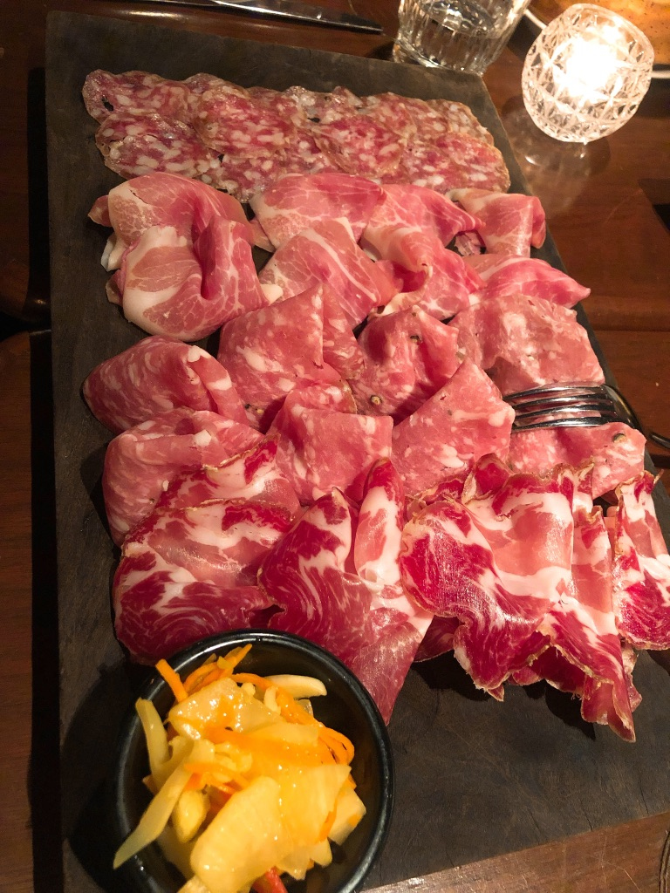
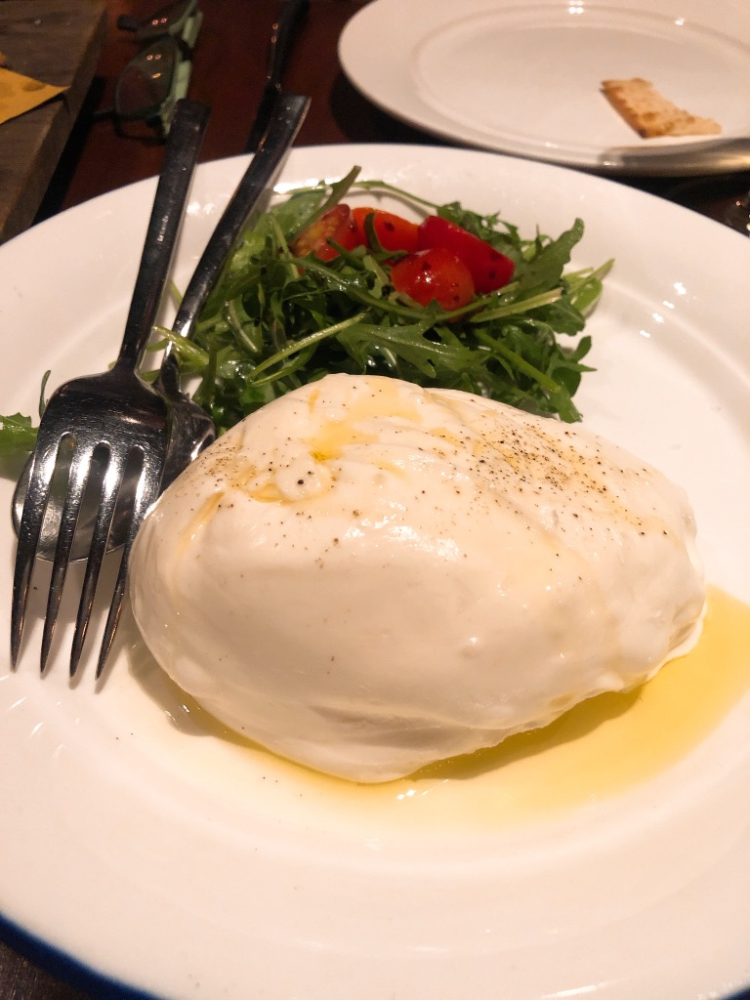
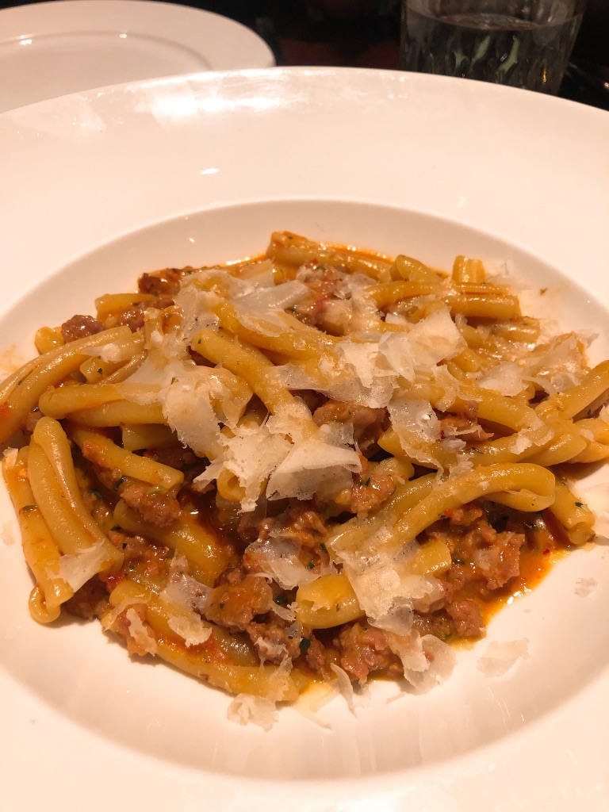
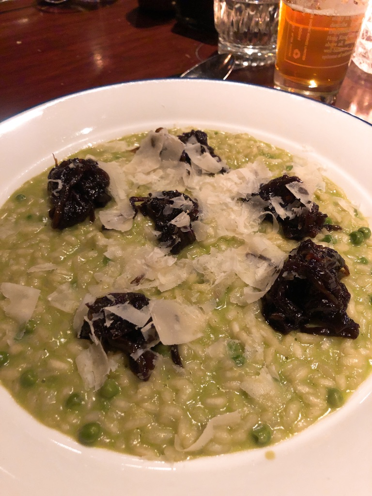
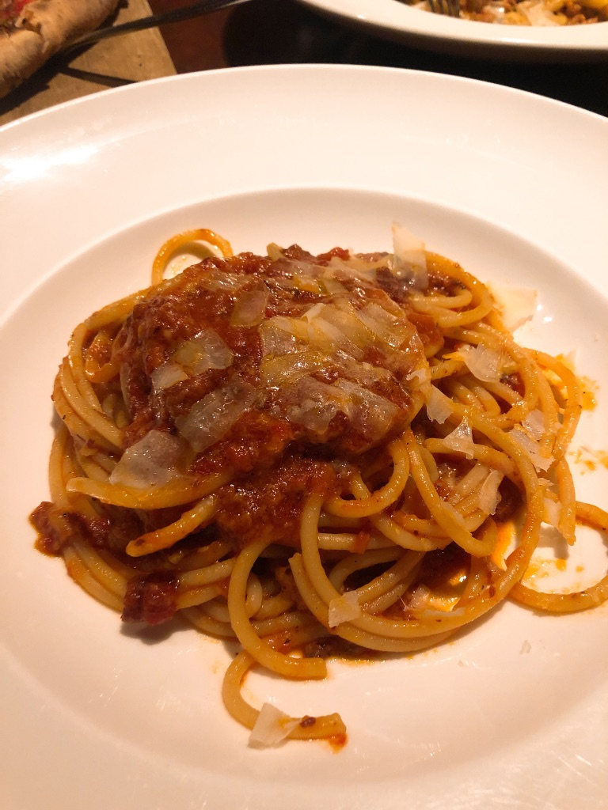
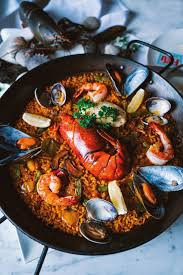
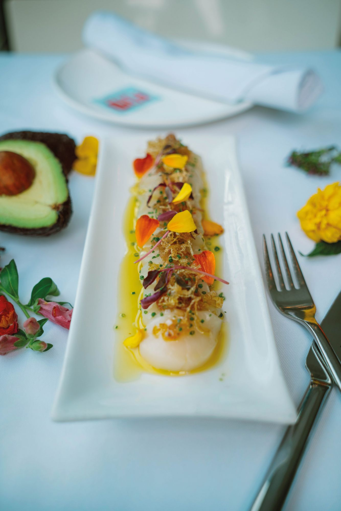
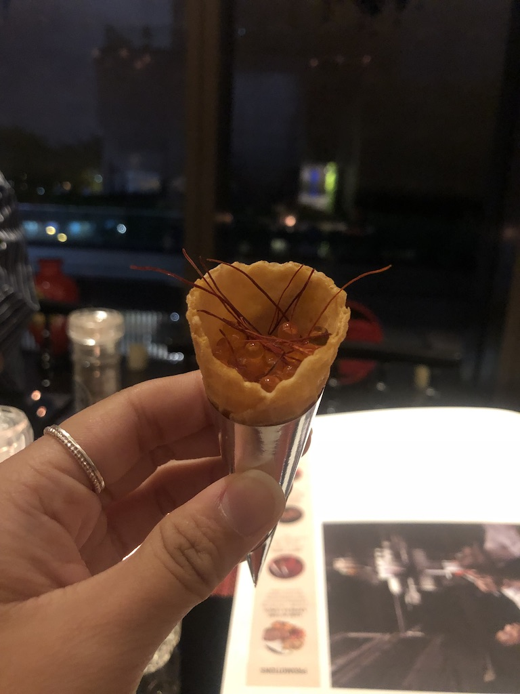
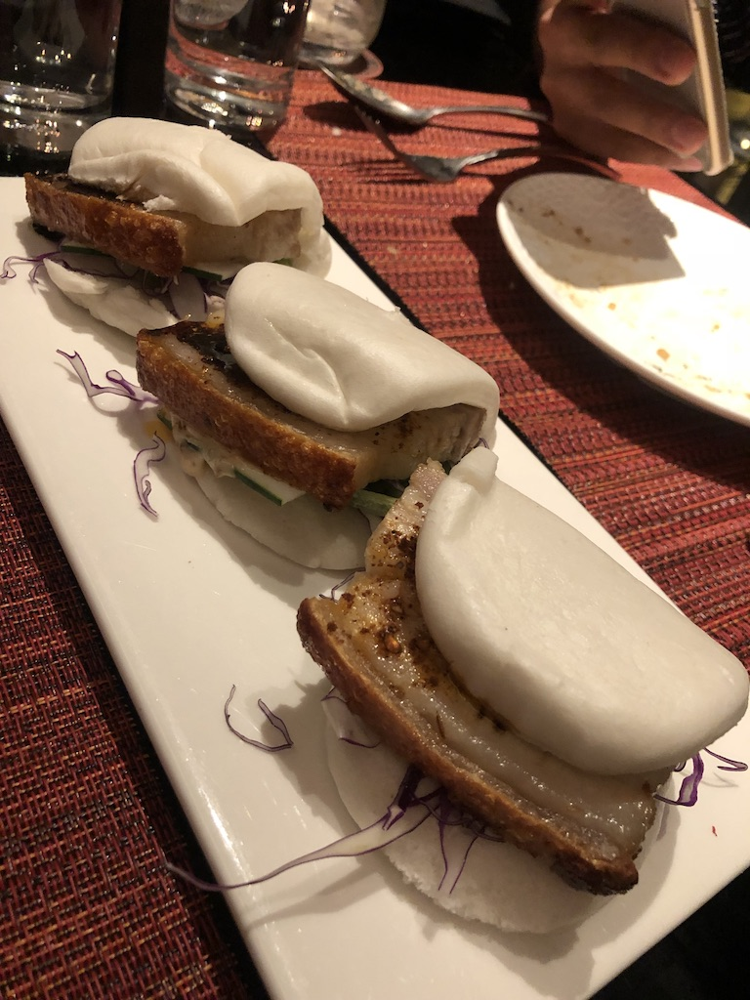
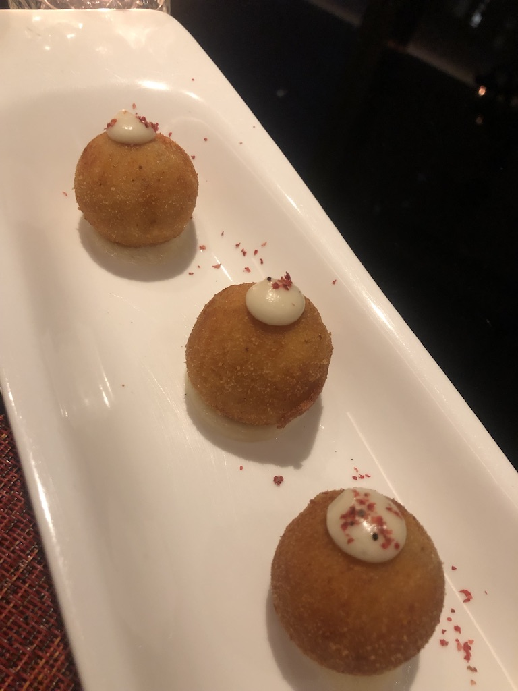

Western Restaurants
Western cuisine, also known as European cuisine, generally refers to the cuisines of Europe and other Western countries like the Americas as well. Hong Kong has a good variety of such cuisine, with many overseas restaurants opening their own location in Hong Kong. One of the more popular western cuisines in Hong Kong are Italian and Spanish food.
Italian
208 Ducentto Otto
Location: 208 Hollywood Rd, Tai Ping Shan, Hong Kong
    
208 Ducentto Otto is one of my favorite Italian restaurants in Hong Kong. The restaurant's decor makes this modern restaurant a go to for fancier meals with family and friends. With a bar on the first floor and the restaurant seating on the second floor, 208 Ducentto Otto is a great location for good food and drinks. The pizzas served at the restaurant are made to the specifications of The Association Verace Pizza Napolentana, using on buffalo mozzarella from Campana and the freshest ingredients in a pizza oven shipped straight from Naples.
Spanish
Fofo by el Willy
Location: 20F, M88, 2-8 Wellington Street, Central, Hong Kong
 
Recognized in the 2017 Michelin Restaurant Guide, Fofo by el Willy offers both traditional and contemporary Spanish tapas. They are famous for their Iberico ham and their menu offers a wide variety of paellas and tapas. The menu is designed by the award-winning Chef of 'el Willy' - Willy Trullas Moreno from Barcelona. This restaurant is considered a little pricer and upscale but worth the price for the great quality of food you get.
Supergiant Tapas & Cocktail Bar
Location: 3/F, Mira Moon Hotel,, 388 Jaffe Rd, Causeway Bay, Hong Kong




Located in Mira Moon Hotel in Wanchai, Supergiant Tapas and Cocktail Bar is the go-to place for sharing traditional spanish dishes. They offer a larger variety than the usual tapas restaurants, including pastas, risottos and meats from the grill.